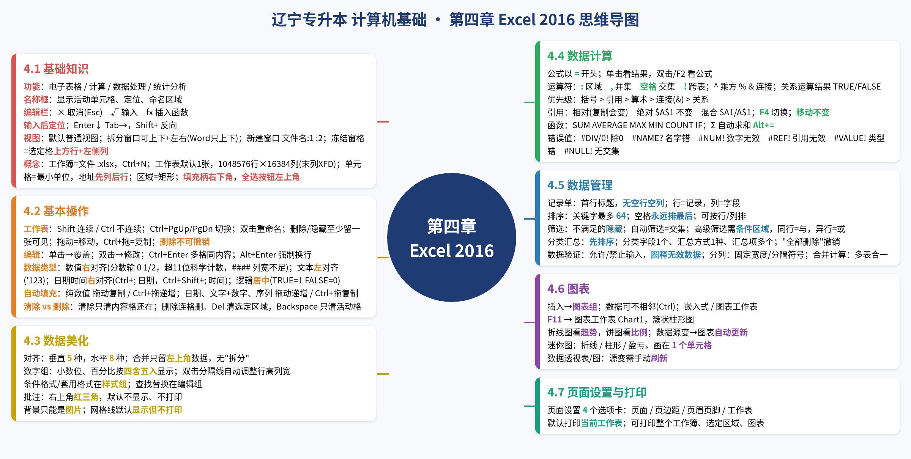

5:31
4.1可观看
基础知识
第四章 Excel · 讲解视频
第四章 Excel 的视频、导图、考点和题库样本。
共 7 个视频，点击封面播放
第四章 Excel · 讲解视频
第四章 Excel · 讲解视频
第四章 Excel · 讲解视频
第四章 Excel · 讲解视频
第四章 Excel · 讲解视频
第四章 Excel · 讲解视频
第四章 Excel · 讲解视频

在新页面中查看完整导图
来源：文盛教育「第四章 操作题总结」7 页模板（OCR 识别后已对照原图）。** 表示由题目给出的内容。
「题型」是模板里的通用答题格式；「例」是模板原有的具体例题，模板里只有 5 道（第 5、13、14、23a、23b 号）（不另编题）。
⟷ 表格较宽，可左右滑动查看
| 题号 | 小节 | 题目要求简述 | 选项卡 | 组 | 命令按钮 | 对话框 / 关键设置 |
|---|---|---|---|---|---|---|
| 1 | 4.2 | 插入工作表 | 开始（或右键工作表标签→插入） | 单元格 | 插入→插入工作表 | 右键方式：插入对话框选「工作表」→确定 |
| 2 | 4.2 | 删除工作表 | 开始（或右键标签→删除） | 单元格 | 删除→删除工作表 | — |
| 3 | 4.2 | 移动工作表 | 开始（或右键标签） | 单元格 | 格式→移动或复制工作表 | 选「下列选定工作表之前」的位置 |
| 4 | 4.2 | 复制工作表 | 开始（或右键标签） | 单元格 | 格式→移动或复制工作表 | 勾选「建立副本」，并选好位置 |
| 5 | 4.2 | 重命名工作表；例：把 Sheet1 改名为「成绩单」 | 开始（或右键 Sheet1 标签→重命名） | 单元格 | 格式→重命名工作表 | 输入「成绩单」 |
| 6 | 4.2 | 隐藏工作表 | 开始（或右键标签→隐藏） | 单元格 | 格式→隐藏和取消隐藏→隐藏工作表 | — |
| 7 | 4.2 | 更改工作表标签颜色 | 开始（或右键标签） | 单元格 | 格式→工作表标签颜色 | 选题目要求的颜色 |
| 8 | 4.2 | 插入单元格 / 行 / 列 | 右键菜单 | — | 插入 | 选活动单元格右移、活动单元格下移、整行或整列 |
| 9 | 4.2 | 清除单元格 | 开始 | 编辑 | 清除→全部清除 | — |
| 10 | 4.2 | 删除单元格 | 开始 | 单元格 | 删除→删除单元格 | 选右侧单元格左移、下方单元格上移、整行或整列 |
| 11 | 4.2 | 移动 / 复制单元格 | 右键菜单 | — | 剪切（或复制）→粘贴 | — |
| 12 | 4.3 | 设置单元格格式（通用题型） | 右键→设置单元格格式；或用开始选项卡 | 字体 / 对齐方式 / 数字 | 对话框里的数字、对齐、字体、边框、填充选项卡 | 按题目要求设置 |
| 13 | 4.3 | 例 1：E3:E8 保留 2 位小数 | 右键→设置单元格格式 | — | 「数字」选项卡 | 分类选「数值」（模板未写，待核对），小数位数设为 2 |
| 14 | 4.3 | 例 2：A2:E2 单元格颜色设为红色 | 开始 | 字体 | 填充颜色 | 红色 |
| 15 | 4.3 | 行高 / 列宽 | 右键行号（或列标） | — | 行高 / 列宽 | 输入题目给的数值 |
| 16 | 4.3 | 单元格样式 | 开始 | 样式 | 单元格样式 | 选题目指定的样式 |
| 17 | 4.3 | 套用表格格式 | 开始 | 样式 | 套用表格格式 | 选题目指定的格式 |
| 18 | 4.3 | 条件格式 | 开始 | 样式 | 条件格式→突出显示单元格规则 | 按题目设置规则和格式 |
| 19 | 4.3 | 替换 | 开始 | 编辑 | 查找和选择→替换 | 查找内容填 **，替换为填 **，点「全部替换」 |
| 20 | 4.4 | 输入公式或函数并填充 | （编辑栏 / 单元格） | — | 输入「=公式」→回车→拖动填充柄 | 题目要求用函数时必须用函数，例如 SUM(A1:A10)；不能写成「+」相加 |
| 21 | 4.5 | 单字段或多字段排序 | 数据 | 排序和筛选 | 排序 | 排序依据填 **，次序填 **；有次要关键字就点「添加条件」 |
| 22 | 4.5 | 自动筛选 | 数据 | 排序和筛选 | 筛选 | 点 ** 字段的筛选箭头，选数字筛选或文本筛选，按题目设置 |
| 23 | 4.5 | 分类汇总（第 1 步排序，第 2 步汇总） | 数据 | ① 排序和筛选 ② 分级显示 | ① 排序 ② 分类汇总 | 分类字段、汇总方式、选定汇总项 |
| 23a | 4.5 | 例 1：按性别，求计算机成绩的平均值 | 数据 | 同上 | 同上 | 先按「性别」排序；分类字段选性别，汇总方式选平均值，汇总项勾计算机 |
| 23b | 4.5 | 例 2：求不同地区铅笔、钢笔、圆珠笔的总销量 | 数据 | 同上 | 同上 | 先按「地区」排序；分类字段选地区，汇总方式选求和，汇总项勾铅笔、钢笔、圆珠笔 |
| 24 | 4.5 | 数据验证 | 数据 | 数据工具 | 数据验证 | 「设置」选项卡里设置允许的类型。整数要设介于、最小值、最大值；序列要填来源（英文逗号分隔），并勾选「提供下拉箭头」 |
| 25 | 4.6 | 插入图表 | 插入 | 图表 | 选图表类型 | 选不相邻的区域时按住 Ctrl，并要选上列标题 |
| 26 | 4.6 | 修饰图表 | 图表工具：设计 / 格式 | 图表样式、图表布局等 | 添加图表元素、切换行/列、选择数据、更改图表类型 | 格式选项卡与形状格式相同，比如图表大小 |
| 27 | 4.6 | 插入迷你图 | 插入 | 迷你图 | 折线 / 柱形 / 盈亏 | 数据范围填 **，位置范围填 ** |
| 28 | 4.6 | 修饰迷你图 | 迷你图工具：设计 | — | 按题目要求操作 | — |
| 29 | 4.6 | 数据透视表（标准操作，模板未写）：按性别统计数学平均分 | 插入 | 表格 | 数据透视表 | 位置选新工作表；性别拖到行，数学拖到值，值字段设置改平均值；源数据改后要刷新 |
说明： - 4.1 和 4.7 在模板里没有操作题。 - 模板最后一页「常见选中区域」的规则：做排序、筛选、分类汇总、插入图表、数据透视表，或者题目里出现数据清单、记录单时，要从 A2 开始，连列标题一起选，不要选 A1 的表标题。迷你图选不选列标题都可以。 - 数据透视表模板里只提到了要选列标题，没有给出完整步骤，待核对。